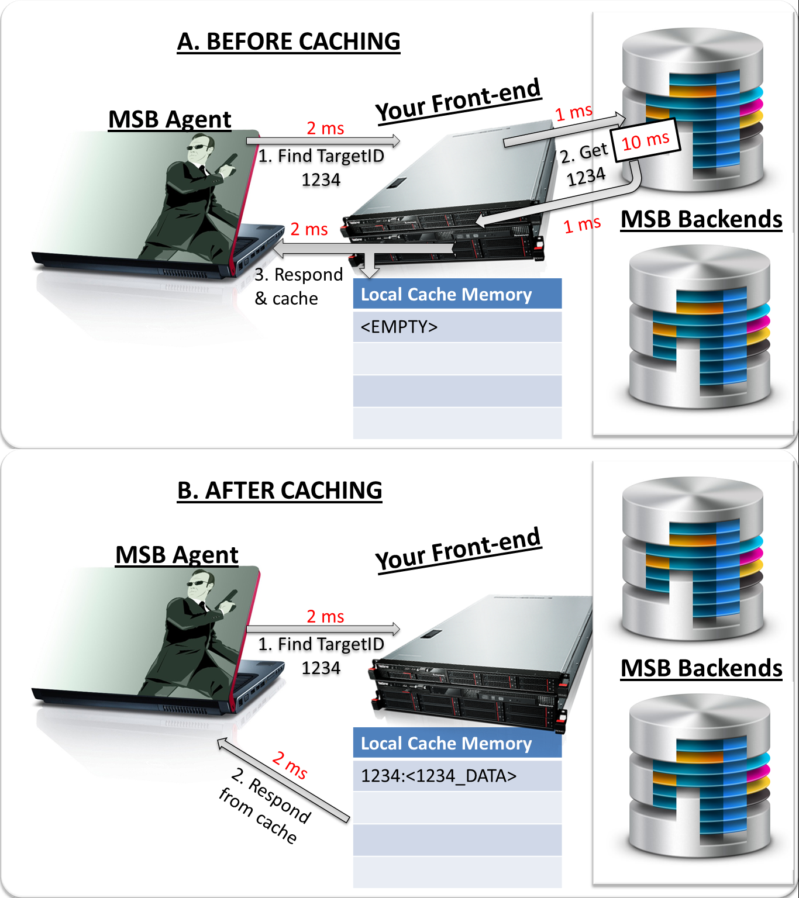

Advanced Scaling Concepts: Caching
Learning Objectives
This project will encompass the following learning objectives:
- Understand the need for caching in web services
- Understand the differences between temporal locality and spatial locality
- Learn how to build a web service that employs caching
Resource Tagging And Project AMIs
For this project, assign the tag with Key: Project and Value: 2.3 for all resources.
For this project, the AMI IDs are Load Generator (LG): ami-7e277316, Data Center Instance (DCI): ami-cc7a2fa4
Front End Instance(FE): ami-4ae2b722. Add port 80 to the security group for all.
For this project, use only m1.small instance for FE and DCI and m3.medium for LG or your test result will be invalid.
Project Introduction
The MSB is spying on CMU students. They want to make sure that the students they hire are really experts at scaling data centers, and not just benefiting from the wisdom of their classmates. They are collecting data on individual student activity (especially the interactions they have with classmates) at CMU and storing them on the data centers instances (DCIs) in the following format:
targetID (number), first_name, last_name, encrypted data(text)
Here, the targetID denotes a particular student with first_name and last_name, while the encrypted data consists of a series of conversations and other activity of the student while the student is at CMU. MSB Agents require this information in the field when investigating individual students at CMU.
This data is served by the DCIs to individual client requests by the targetID. Therefore, a client (the load generator in our case) sends a targetID to the DCIs, which can then reply with:
Target
<targetID>
first_name last_name’s encrypted conversations are: <conversations>
MSB is interested in improving the performance of this system to better serve the needs of its agents in the field. Each DCI instance is able to cache around 10,000 records at any given time. However, with so many nefarious activities (and so many tricky students), this level of caching is insufficient when testing against our Load Generators. The MSB is interested in optimizing the performance by introducing a caching tier.
Improving Performance through Man-In-The-Middle Caching
A significant factor that makes the World Wide Web a success is the number of interesting applications that it provides to users. However, these applications are often resource-hungry and performance-sensitive. Also, users have high performance expectations, requiring application designers to build scalable systems.
As we have seen earlier, one way to improve the performance of a system is by using horizontal or vertical scaling (adding more/larger resources to the system). Though this approach was great for computer hardware manufactures, it led to incredibly expensive systems that became obsolete every few years. A better solution would be to improve the performance of a fixed set of resources responding to the workload it faced. Two of the most trivial ways that this is achieved is with the use of caching and replication [1].
Replication, caching and load-balancing are the simplest ways to deal with scaling systems, without partitioning/sharding data (we will explore this in future projects). Caching is often done with special applications (like Varnish, Squid, memcached), which store the result of common computations closer to the client. This has two benefits: a) The system does not recompute results, allowing more efficient use of the infrastructure, and, b) The data is moved closer to the client, reducing the number of hops taken to send results back to the client. These techniques are hugely responsible for the success of web giants Google, Flickr, Facebook, Wikipedia…
The other common solution, often used in conjunction with a cache, is replication. Here, multiple copies of the data or applications are distributed across the system. This allows many different resources to respond to simultaneous service requests that rely on the same computation base. However, while using this approach, it is important to consider several points. First, a strategy must be established to transparently distribute client requests to the replicas. This can be content-aware (specific requests are redirected to specific replicas) or content-blind. Next, the replicas should be monitored such that there is no imbalance (or hot spot) for the most frequently requested pages. Finally, maintaining consistency when writing across these replicas is another hard problem that we must learn how to deal with in the future. We will not address consistency in this week’s project.
The MSB system we deal with this week has two replicas of a database in the back end. This alleviates the chances of overwhelming a single instance during periods of heavy load. Another important reason for this is so that they can have an element of fault-tolerance in case of database corruption, or failure. As you may have experienced last week, it is very dangerous to leave only a single instance running at any given time, as failure leads to an outage (as opposed to service deterioration, if we have two instances). It is also possible to dynamically scale these in and out, but we will not be doing that this week. The following figure should make this clearer:
Fig 1.1
A. Tracing the first request for a target in the MSB Data Center
B. Tracing the request for a target cached in the front-end
In the example above, internal communications within the data center take 1 ms, fetching the data from disk takes 10 ms and external communications take 2 ms each. Before caching, when the MSB Agent first requests data (about Target ID 1234), your program needs to reroute this request to one of the backend instances and read the encrypted conversations. This requires 12 ms to fetch the data and replay it to the agent-- the entire transaction takes 16 ms. However, if you now store this on the front-end, then the next time that an agent asks for data from Target ID 1234, you can simply retrieve it from the front-end, hence a transaction takes only 4 ms. In this case, you are exploiting temporal locality, which means that you assume that a target that is being searched for, may be requested multiple times in succession.
There may also be spatial locality -- say data about Target ID 2345 is requested for the first time. If it is safe to assume that #2345 is part of a gang of suspects, you may want to cache all IDs from 2345-2350. In this case, the first read may take longer than 12 ms, but future reads will take only 4 ms. As a part of mastering debugging and monitoring on the cloud, you should be able to estimate these durations yourself.
Another thing to remember is that caching can be explicit and implicit, and can happen at multiple layers. For e.g., in both situations above, you are explicitly caching the target’s records on the front-end. However, most data stores (DBs, file systems etc.) also employ a form of caching. In this data center, the MSB stores the most recent 10,000 unique records per backend. Hence, if the example from Fig 1.1. was repeated several times, it would not really require 16 ms, even if there was no front-end caching. Instead, all future requests would take only 6 ms (the 10 ms fetch would take place only on the first read).
Goals
The MSB has requested you to build a system that gives a good throughput for different kinds of traffic patterns that MSB experiences. Unfortunately, the instances have a very limited memory. You will have to study the trace file and identify patterns for caching. Luckily, MSB has given you the code that a former employee had written before he was fired for being incompetent. Although your team lead believes that adding a layer of cache will make a significant improvement in the throughput, you might also want to consider optimizing other parts of the code.
The two DCI provided to you have a cache which stores 10,000 most recently accessed records. Both instances have the same data, but have their own caches. The DCI instances have the following interfaces:
- "/target?targetID=X" returns the result for that targetID and caches it.
- "/range?start_range=X&end_range=Y" returns the result (semi-colon separated) for all targetIDs in that range and also caches it.
Tasks to Complete
- Launch a frontend instance of type m1.small.
- You only have ssh access to this instance. SSH into the instance using ubuntu as the user name and your own pem file.
- In the folder Project2_3 you will find the executable submitter, MSB.java, MSB.py, references and several other helper files.
- Decide whether you want to complete this project in Java or in Python, and accordingly get familiar with the code in MSB.java or in MSB.py.
- Launch two datacenter instances of type m1.small and one load generator instance of type m3.medium. Make sure that you have added port 80 to the security group to allow http requests.
- In MSB file, add your two datacenter instances’ DNS in the format ec-XX-XX-XX-XX.compute-x.amazonaws.com.
- You are required to modify the function retrieveDetails to make it perform faster. You can run the code already present to get a feel for the process.
- To improve the performance, you are allowed to store up to 1000 records in a local cache on the Front-end instance. The data structure, eviction & loading strategies and any other optimizations are completely in your hands. However, you CANNOT STORE MORE THAN 1000 RECORDS IN THE FRONT-END. If you do, it is a 100% penalty.
-
Once you have made your changes, try starting the web service using the following command:
sudo vertx/bin/vertx run <MSB-file-name> -
Once you are convinced that your web service works, make a submission by executing one of the following commands, depending on your choice of language:
For Java
./submitter -j -l <your-load-generator-dns> (in the format ec-XX-XX-XX-XX.compute-x.amazonaws.com)For Python
./submitter -p -l <your-load-generator-dns> (in the format ec-XX-XX-XX-XX.compute-x.amazonaws.com)Please note that all outputs from your MSB file are suppressed, and that you will not be able to see them on the console
- You can view the test logs by going to the user interface of your load generator through your browser.
Hints
- It might be a good idea to not launch the load generator and the DCI until you are familiar with the web service code that has been provided to you.
- You are allowed to make changes to all functions in MSB.java or MSB.py to make your web service faster. However, make sure that you don't cache more than 1000 records at a time.
- You might find it useful to measure the various latencies in your system to find out the components that you should try to optimize the most.
- Read up about temporal locality and spatial locality. Think how you can apply those two concepts while designing your cache.
- You are given two DCIs with identical data but separate caches. Think how you can utilize both caches to their fullest.
- Get familiar with the concepts of synchronous and asynchronous requests. The DCIs offer web-services which make asynchronous requests to the underlying database. Find out what kind of requests the code given to you is using.
- For the sake of simplicity, we are not doing any inserts, updates or deletes. This makes it easier to have a consistent backend. However, you may find it interesting to think about the complexity of making changes to the backend.
- You can get a full score (100 points) by simply caching (no other optimization).
Additional Resources and References
1. Brewer, Eric A. "Lessons from giant-scale services." Internet Computing, IEEE 5.4 (2001): 46-55.
Project Grading Penalties
Besides the penalties mentioned in recitation and/or on Piazza, penalties accrue for the following:
| Violation | Penalty of the project grade |
|---|---|
| Spending more than $10 for this project phase | -10% |
| Spending more than $20 for this project phase | -100% |
| Failing to tag all your resources for this project | -10% |
| Submitting your AWS credentials in your code for grading | -10% |
| Using instances other than the ones specified | -100% |
| Caching more than 1000 records in the front end | -100% |
[1] Rabinovich, Michael, and Oliver Spatscheck. Web caching and replication. Boston, USA: Addison-Wesley…”